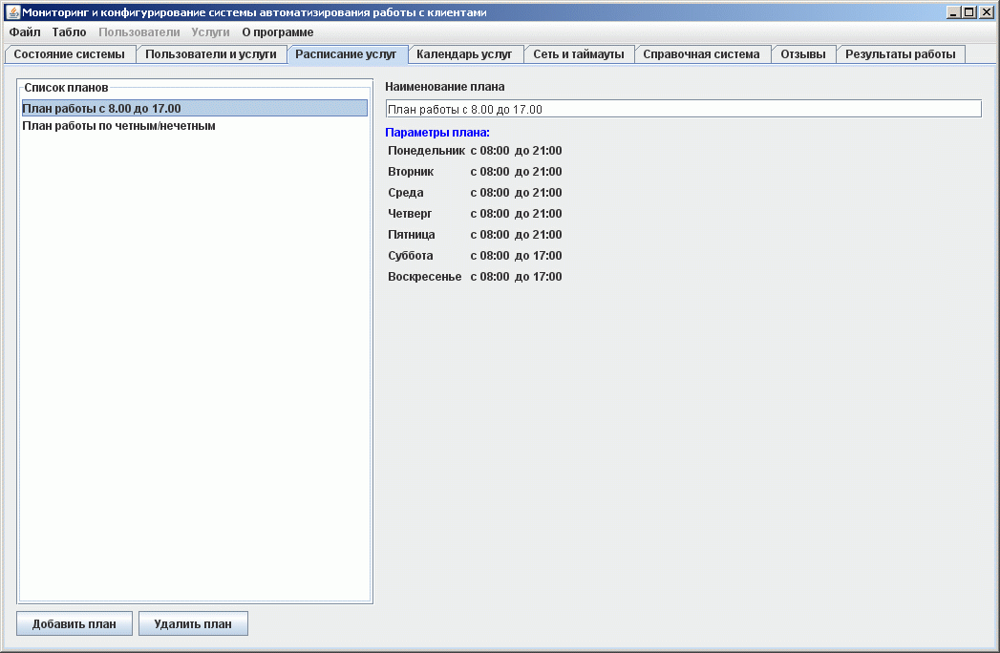
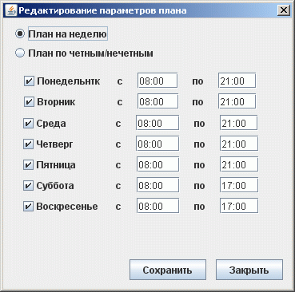

Ведение справочника расписания услуг
На этой закладке формируется справочник расписаний услуг в организации, которые учитываются при постановке клиента в очередь и при предворительной записи на получение услуги.

В левой части расположен список возможных планов распиланий для услуг. Можно добавлять новые или удалять старые планы. Размер справочника не ограничен.
Справа расположена детальная информация по выбраному плану расписания. Вызвать редактор плана можно из контекстного меню либо по двойному щелчку мышью. При этом откроется редактор плана расписания:
